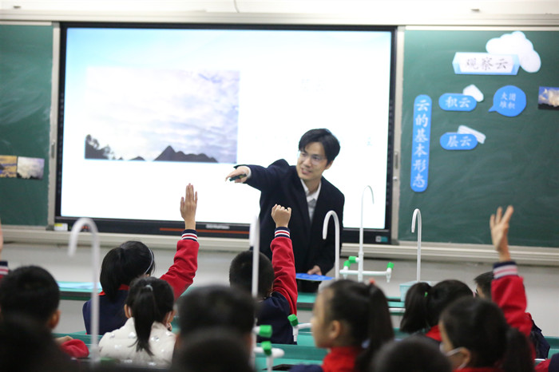

鞍山市铁东区胜利小学欢迎您！
首页 > 详情信息
2020年11月21日，我校全体教师集中东校区参加了本学期第二次（总第96次）“三环五步”教科研活动。参加本次活动的还有集团成员学校张浦二小的老师们。
首先，由八位青年老师进行课堂展示。
语文组，我校的范思敏老师执教了《四季之美》。课上，范老师从“独特”入手，并贯穿整堂课。上课伊始，范老师先让学生交流：“如果让你来写四季之美，你会写什么”？那么学生就会发现，我们大多数人写四季都会想到——“春有百花秋有月，夏有凉风冬有雪”，这些四季最具代表性的景物。接下来的教学也围绕寻找“独特”展开，让学生去发现作者笔下的四季之美独特在哪儿，这样学生就能发现这篇课文独特的写作视角了！
张浦二小的张劲松老师执教了《美丽的小兴安岭》的第二课时，张老师主要指导了有关春天的段落，指导学生先找出文中描写了哪些景物，再通过找关键词的方法来理解这些景物的特点，最后读出感受。学完本段之后及时和学生共同总结了学习的方法步骤。然后指导学生自学有关夏天的段落，品品自己感受最深的句子，适时加以点拨。最后让学生以小组为单位，自由分析剩下两个段落，进行学习的反馈。这种学习方法体现了“教、扶、放”的原则，既发挥了教师的主导作用，又凸显了学生的主体地位，学生自主学习的能力得到了充分的锻炼和培养。
数学组，我校的陆逸茹老师执教了《解决问题的策略》，本节课陆老师紧扣课程性质，充分体现学生是学习的主体，给予充分的时间让学生独立用自己喜欢的方法一一列举，给予足够的空间让学生在全班前展示自己的成果并勇敢表达自己的想法。同时，老师还注重培养学生的学习方式，利用学生在教学中生成的信息来归纳出一一列举的不同方式，利用学生的正误示范来归纳一一列举的注意点，反复强调有序性，以此来解决本节课的重点和难点。
张浦二小的夏美珍老师执教了《认识几分之一》，本节课是学生第一次接触分数，夏老师在导入时提问“还能用我们学过的整数来表示吗？”学生的在认知冲突中感受“分数”产生的必要性。新授时，非常重视对分数意义的理解，动手折一折、涂一涂的过程更是加深了学生的理解。整节课以学生为主体，尊重学生的认知规律，关注学生心理特征
英语组，我校的沈妮老师执教了《4A Unit6 At the snack bar》的综合板块，沈老师以“Double 11”为契机，给学生创造了购物这个语言情景，并贯穿整节课始终；以游戏为导入，分别引出各个版块教学，强调学习与生活的联系，注重学生思维、情感、行动的整合。整节课寓教于乐，充分调动了学生的积极性。
张浦二小的周倩雯老师执教了《6A Unit5 Signs》的综合板块，本堂课依据远足前的准备工作，远足中的趣味经历，以及远足后的回顾来将整堂课串联起来。在谈论到英国地铁时，周老师还补充了一些课外的内容，来拓宽学生的知识面。随后，周老师将话题进一步延伸到了英式英语与美式英语的不同，来让学生对英美文化有更多的了解。在故事教学完成后，让学生根据故事的留白部分，思考想象接下来还会发生什么。陆老师先给出自己的思考，让学生展开讨论，编写新的结尾。整堂课脉络清晰，层层递进，让学生能从这堂课中有所收获。
综合组，我校的冯波老师执教了《观察云》，冯老师以开场出现一朵漂浮的”实物云”的方式，成功吸引了学生的注意，激发了热烈的讨论。再通过大量的云朵的照片和到位的解释，让学生了解了云的三种基本形态。最后通过室外观察天空中的云，让学生更深刻的感受了云的千姿百态，知道了云量与天气之间的关系，整堂课学生兴趣浓厚，热情高涨。

张浦二小的赵铭洋老师执教了《画方形和圆形》，赵老师通过导入《三只小猪》前半段视频，引出画小卡车。画完小卡车，继续播放后续的《三只小猪》视频，从而引出拓展画房子。一整段视频贯穿于整个课堂，思路清晰，让学生学会用“矩形”“圆角矩形”“椭圆”工具。对于拓展部分，赵老师采用分层次教学，学生可以自行选择教师出示的某一个房子图形作为参考，也可以发挥自己的想象力，画出属于自己的房子。
之后，语文组、数学组、英语组和综合组的八位老师先进行了说课，围绕教学环节阐述了设计意图，后由我校及张浦二小的各学科的骨干老师进行点评。
本次活动不仅体现了各教研组认真负责的态度和团结协作的精神，也引发了老师们对课堂教学更深层次的思考。同时，为青年老师们互相学习和锻炼提供了很好的平台，提升了青年教师们的课堂驾驭能力与课堂教学技能，也增进了学校之间、集团成员之间的交流和友谊。